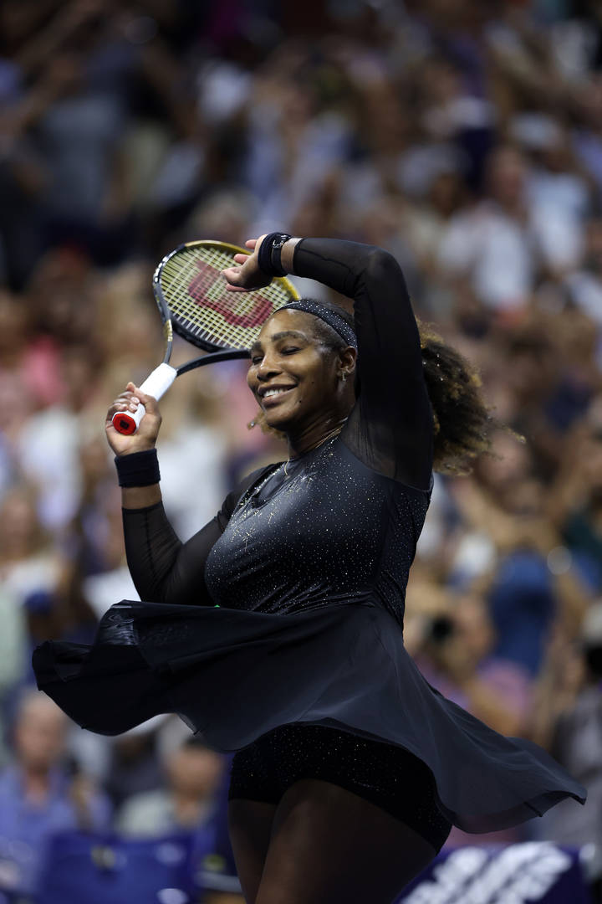

Serena Williams is currently making big waves at the US Open. Last night, she upset the number 2 seeded women's tennis player, and now, she is off to the third round as she tries to win the title in her last-ever tournament. It would be the perfect send-off for Williams who has proven herself to be one of the most dominant athletes of all time.
Heading into this tournament, Nike is making sure that Serena is able to get everything done in style. Recently, the company sent her a box filled with some incredible custom kicks, and for the most part, Williams received a ton of Nike Air Force 1 Lows, which seems to be her favorite shoe.
Of all of the sneakers in the haul, Serena's favorite was the one created by Virgil Abloh prior to his death. As you can see in the video clip down below, the shoe has all of Virgil's signature design techniques. In terms of the colorway, we are met with a grey upper that has some yellow accents. This is a shoe inspired by a Tutu Williams once wore while out on the court, and it is clear these shoes have sentimental value for her.
It remains to be seen how the rest of the US Open will go for Serena, but if there is one thing for sure, it's that the entire sports world is watching.
Yida's Comment on this: RIP Virgil.
| Virgil | Willams |
|---|---|
| Designer | Tennis Player |
| Artist | Entrepreneur |